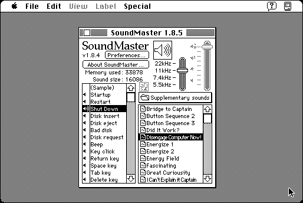

Download
SoundMaster185.zip (1.2M) SoundMaster 1.8.5 repackaged into a zipped hfs disk image and checksum file. The disk image can be mounted with Mini vMac.
SoundMaster185.sit (1.1M) SoundMaster 1.8.5 in the original format.
copyright: Bruce Tomlin
mod date: Oct 28, 2003
license: Freeware, former shareware
from url :
SoundMaster home page
A “utility that makes your Macintosh play sounds when certain system events occur (such as key clicks, disk insertion and ejection, and emptying the trash).” Requires “System 6.0.4 or later”. Actually, it may require System 7, for Macintosh Plus emulation at least.

If you find these downloads useful, please consider helping the Gryphel Project, which hosts them.
Here are the md5 checksums for the downloads, signed with Gryphel Key 5:
--------- GRY SIGNED TEXT --------- 1a4d91ed9f2b056b5e67cca2c497c1a1 SoundMaster185.zip 0f462b8617d1de1e67321de0ea5b4c84 SoundMaster185.sit ------- BEGIN GRY SIGNATURE ------- Gry/4Xa8CFcUzxdN/A30tm4UD8eoTKL861b/94b8iqsXjQaWbTyYBDW33BStosXh 6zNObe9MPweyPaHh5Kr67yWHewcqomsG4Dh4DtwLkoLsUwIKel7HQnmN58BoZiqV VQ02W4Gpx/TEqGz6qKHnGZ430ugO5ou90yi4LQCfSDdEPAjShuKXuv81tT4z5A/e -------- END GRY SIGNATURE --------